Você já imaginou lutar contra seu próprio demônio interior enquanto lidera sua equipe à vitória? A história de Ishmael em Hero Wars: Dominion Era é ao mesmo tempo trágica e inspiradora. Forçado a matar o próprio pai para impedir um sacrifício sombrio, ele agora carrega a sombra daquela batalha dentro de si. Isso o torna um dos guerreiros mais fascinantes do jogo.
Neste guia, vamos explorar as habilidades, atributos, pontos fortes de Ishmael e as melhores maneiras de maximizar seu potencial em batalha. Seja você um iniciante ou um jogador experiente, entender como construir e apoiar Ishmael pode ser a diferença entre vitória e derrota.
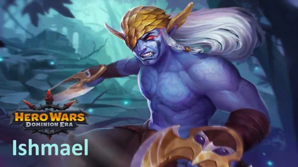
Guia Ishmael - Hero Wars: Dominion Era, um jogo desenvolvido pela Nexters.
Quem é Ishmael?
Ishmael é um guerreiro de linha de frente movido por agilidade e resiliência. Seu passado único, marcado por tragédia e conflito interno, o torna não apenas um herói poderoso em batalha, mas também um dos personagens mais emocionalmente cativantes de Hero Wars: Dominion Era.
Classe: Guerreiro
Posição: Linha de Frente
Atributo Principal: Agilidade
Com alta capacidade de sobrevivência, Ishmael se cura enquanto causa dano, tornando-se uma ameaça duradoura em batalhas prolongadas. Sua força cresce ainda mais quando está ao lado de aliados que aumentam o dano e a chance de acerto crítico, como Jet, Nebula, Sebastian e Fafnir.
Dominar Ishmael significa dominar o equilíbrio: liberar todo o seu alto potencial de dano enquanto garante o suporte certo para dominar o campo de batalha.
Prós e Contras de Ishmael - Hero Wars: Web e Facebook
✅ Prós
Alto Dano: Os acertos críticos e a velocidade de ataque de Ishmael em sua forma demoníaca permitem que ele destrua inimigos rapidamente.
Sustento através do Vampirismo: Ele recupera vida enquanto causa dano, garantindo ótima sobrevivência em lutas prolongadas.
Guerreiro de Linha de Frente: Pode atuar tanto como causador de dano quanto como semi-tanque graças ao roubo de vida e ao escalonamento com agilidade.
Sinergia com Buffers: Funciona extremamente bem com heróis que aumentam a chance de crítico e o ataque físico, como Sebastian, Nebula e Jet.
Pico de Poder na Ascensão: O Despertar Brutal faz com que seus críticos causem 4x mais dano, transformando-o em um verdadeiro carregador de late game.
❌ Contras
Dependente de Acertos Críticos: Seu principal dano depende de críticos, tornando-o vulnerável a counters anti-crítico como Helios e Amira.
Fraco contra Dano Puro: Inimigos como Arachne e Phobos ignoram sua esquiva e defesas, drenando rapidamente sua vida.
Necessita de Suporte da Equipe: Sem heróis que aumentem seus atributos ou o protejam, Ishmael tem dificuldade em alcançar seu potencial máximo.
Dreno de Energia na Forma Demoníaca: Sua forma suprema é temporária e acaba quando a energia se esgota, limitando seu burst sustentado.
Vulnerabilidade a Controle: Atordoamentos, encantamentos e cegueiras (como os de Lian e Mara) podem anulá-lo completamente no meio da luta.
Prioridade de Melhoria das Habilidades de Ishmael - Hero Wars: Dominion Era
Descubra quais habilidades de Ishmael são mais importantes, explicadas em termos simples com raciocínio claro para cada prioridade de evolução.
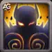
Despertar
Ishmael se transforma em sua forma demoníaca, recebendo um enorme aumento na velocidade de ataque e na chance de acerto crítico. Essa é a habilidade que torna Ishmael mortal, pois quanto mais rápido ele ataca e quanto mais críticos acerta, mais vida ele restaura através do vampirismo. A desvantagem é que ele perde energia aos poucos e, quando chega a zero, a forma termina.
Fórmula: (Aumento da chance de crítico: 1300 + (Nível da Habilidade × 10)).
Prioridade de Evolução:Muito Alta – Esta é a habilidade central de Ishmael. Sem ela, ele é muito mais fraco. Sempre maximize esta primeiro para torná-lo um verdadeiro carry.
Habilidade - Despertar, Hero Wars Dominion Era.
Habilidade de Ascensão: Despertar Brutal – Acertos críticos causam x4 de dano em vez de x2 quando em forma demoníaca. Isso faz com que o poder de Ishmael no fim do jogo dispare, tornando-o um dos melhores causadores de dano se bem apoiado.
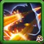
Fantasma
Ishmael se torna muito mais difícil de atingir, esquivando-se de ataques físicos por um curto período. Cada esquiva concede poder extra, ajudando-o a sobreviver e causar mais dano. No entanto, se o nível do inimigo for muito maior, a chance de esquiva é reduzida.
Fórmula: (A chance de esquiva depende do nível de Ishmael vs. nível do alvo).
Prioridade de Evolução:Alta – Sobrevivência é fundamental. Esta habilidade mantém Ishmael vivo tempo suficiente para liberar seu dano. Melhore após Despertar.
Habilidade de Ascensão: Fantasma Ilusório – Permite que Ishmael esquive não apenas de ataques físicos, mas também de ataques mágicos. Isso o torna muito mais forte contra magos e equipes equilibradas, aumentando bastante sua sobrevivência.
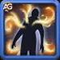
Artes Sombrias
Esta habilidade passiva aumenta o vampirismo de Ishmael, ou seja, ele se cura sempre que causa dano. Quanto mais fortes forem seus críticos, mais vida ele recupera. Isso funciona perfeitamente com Despertar e o torna muito difícil de matar enquanto continuar atacando.
Fórmula: (% de Vampirismo = 75 + (Nível da Habilidade × 0.576924 + 11.53848)).
Prioridade de Evolução:Média Alta – Uma boa habilidade para investir, mas somente depois que Despertar e Fantasma estiverem bem evoluídos. Ajuda Ishmael a sobreviver em batalhas longas.
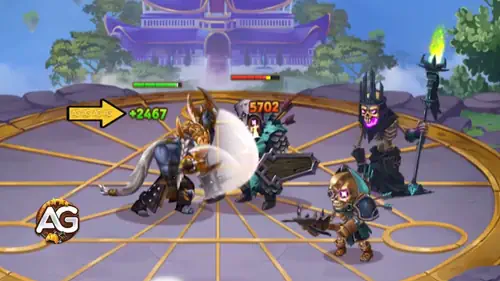
Habilidade - Artes Sombrias, Hero Wars Dominion Era.
Lâminas da Tempestade
A cada terceiro ataque Ishmael atordoa seu oponente por um segundo. Isso pode ser útil para interromper inimigos, mas como a chance de atordoar diminui contra inimigos de nível mais alto, torna-se mais confiável no fim do jogo.
Fórmula: (A chance de atordoar depende do nível de Ishmael vs. nível do alvo).
Prioridade de Evolução:Baixa – Embora o atordoamento possa ajudar, não é tão importante quanto suas outras habilidades. Melhore esta por último, depois que todas as outras estiverem fortes.
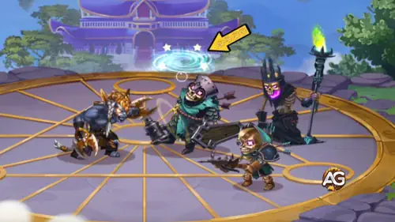
Habilidade - Lâminas da Tempestade, Hero Wars Dominion Era.
Melhor Patronagem para Ishmael
Escolher a patronagem certa para Ishmael aumenta bastante seu dano e sua sobrevivência. Aqui estão as melhores opções, classificadas da mais forte para a mais fraca.
Fenris é a melhor patronagem para Ishmael porque aumenta diretamente seu Ataque Físico e sua Penetração de Armadura, dois atributos que fortalecem o dano crítico e permitem que ele destrua as defesas inimigas. O efeito de cegueira da habilidade de patronagem de Fenris torna os ataques básicos de Ishmael ainda mais perigosos, atrapalhando os oponentes enquanto ele se cura com vampirismo. Essa sinergia faz de Fenris a escolha mais forte no geral.
Mara é situacional, mas ainda muito poderosa. Sua habilidade de patronagem estende a duração dos atordoamentos das Lâminas da Tempestade de Ishmael e de qualquer efeito de controle aplicado por seus aliados. Embora ela não aumente atributos físicos, o tempo de controle prolongado pode ajudar Ishmael a manter os inimigos travados por mais tempo, dando-lhe mais chances de aplicar golpes críticos. Uma boa opção secundária se você quiser mais controle de grupo.
Oliver oferece bônus de vida e armadura, além de uma autocura de emergência quando o HP de Ishmael cai abaixo de 50%. Isso torna Ishmael muito mais difícil de matar no início, especialmente em lutas longas. No entanto, Oliver não aumenta diretamente seu dano, motivo pelo qual fica abaixo de Fenris e Mara no ranking. Ainda assim, é uma escolha sólida se sua prioridade for sobrevivência em vez de dano bruto.
Melhor Visual para Ishmael – Hero Wars: Dominion Era
Descubra quais aparências de Ishmael valem mais a pena evoluir primeiro. Veja a ordem ideal com base no impacto em batalha, sobrevivência e potencial de dano.
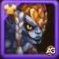
Visual Padrão
Ganho de atributos: Agilidade: +1.365
- Ataque físico da Agilidade: +4.095
- Armadura da Agilidade: +1.365
Cada ponto de agilidade concede: dois pontos de ataque físico; um ponto de armadura; e um ponto extra de ataque físico se a agilidade for o atributo principal do herói.
Prioridade de Evolução:Muito Alta – Aumentar o atributo principal de Ishmael melhora tanto seu dano quanto sua sobrevivência. Sempre evolua esta aparência primeiro.
Total de Pedras de Visual de Agilidade para o nível máximo:
30.825
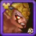
Visual Romântica
Ganho de atributos: Chance de Acerto Crítico: +2.960
Prioridade de Evolução:Alta – Acertos críticos são a base do dano de Ishmael, especialmente quando combinados com Despertar e a ascensão Despertar Brutal. Esta aparência o torna muito mais letal.
Total de Pedras de Visual de Agilidade para o nível máximo:
55.410
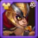
Visual de Campeão
Ganho de atributos: Ataque Físico: +7.117
Prioridade de Evolução:Média Alta – Aumenta diretamente o dano bruto de Ishmael. Forte, mas um pouco menos impactante do que as aparências de Agilidade e Chance Crítica.
Total de Pedras de Visual de Agilidade para o nível máximo:
55.410
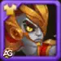
Visual Solar
Ganho de atributos: Penetração de Armadura: +10.650
Prioridade de Evolução:Média – Ajuda Ishmael a atravessar defesas de tanques. Boa contra linhas de frente com muita armadura, mas menos útil contra equipes focadas em magia.
Total de Pedras de Visual de Agilidade para o nível máximo:
55.410
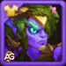
Visual de Primavera
Ganho de atributos: Ataque Físico: +7.095
Prioridade de Evolução:Média – Adiciona mais ataque físico, mas não é tão essencial quanto as aparências de Campeão ou Romântica. Fornece dano extra, mas não é prioridade.
Total de Pedras de Visual de Agilidade para o nível máximo:
55.410
Visual Mascarado
Ganho de atributos: Vida: +106.645
Prioridade de Evolução:Baixa – Fornece sobrevivência, mas Ishmael depende mais do vampirismo e do dano. Esta aparência é situacional e deve ser a última a ser evoluída.
Total de Pedras de Visual de Agilidade para o nível máximo:
55.410
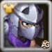
Visual Triturador
Ganho de atributos: Nenhum (Apenas Visual)
Prioridade de Evolução:Muito Baixa – Esta aparência é puramente cosmética e não afeta os atributos ou jogabilidade de Ishmael.
Total de Pedras de Visual de Agilidade para o nível máximo: N/A (aparência visual)
Observação: Esta skin só pode ser obtida durante um evento especial usando um Ingresso de Evento.
Prioridade de Evolução dos Artefatos de Ishmael – Hero Wars: Dominion Era
Entender quais artefatos priorizar para Ishmael garante o máximo de dano e sobrevivência. Aqui está a melhor ordem para evoluí-los com base no impacto em batalha.
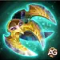
Artefato de Arma: Katar do Demônio Oculto
Ganho de atributos: Chance de Acerto Crítico: +13.941
Prioridade de Evolução:Muito Alta – Este artefato é ativado com a habilidade suprema de Ishmael, aumentando a chance de acerto crítico de toda a equipe. Como a principal força de Ishmael está em causar acertos críticos devastadores, este artefato é essencial e deve sempre ser priorizado em primeiro lugar.
Artefato de Livro: Livro do Alquimista
Ganho de atributos: Penetração de Armadura: +16.731, Ataque Físico: +5.577
Prioridade de Evolução:Alta – Aumenta a capacidade de Ishmael de ignorar a armadura inimiga e fortalece seu dano bruto. Isso se encaixa perfeitamente com seus acertos críticos rápidos, tornando-o mais eficaz contra inimigos resistentes. Deve ser evoluído após o artefato de arma.
Artefato de Anel: Anel da Agilidade
Ganho de atributos: Agilidade: +6.249
- Ataque físico da Agilidade: +18.747
- Armadura da Agilidade: +6.249
Cada ponto de agilidade concede: dois pontos de ataque físico; um ponto de armadura; e um ponto extra de ataque físico se a agilidade for o atributo principal do herói.
Prioridade de Evolução:Média Alta – Este artefato fortalece o atributo principal de Ishmael, concedendo tanto ataque quanto defesa. Embora útil, não fornece tanto benefício para a equipe quanto sua arma ou livro, por isso deve ser evoluído em terceiro lugar.
Prioridade de Evolução dos Glifos de Ishmael
Otimizar os símbolos de Ishmael maximiza seu potencial de acertos críticos e sua sobrevivência. Aqui está a ordem de prioridade com explicações baseadas no desempenho em batalha.
1º Glifo - Ataque Físico:
Ganho de atributos: Ataque Físico: +4.340
Prioridade de Evolução:Muito Alta – Ishmael depende de dano físico bruto para desencadear acertos críticos massivos. Aumentar o ataque físico escala diretamente seu DPS, tornando este o símbolo principal a ser evoluído primeiro.
2º Glifo - Vida:
Ganho de atributos: Vida: +62.200
Prioridade de Evolução:Alta – Embora Ishmael seja excelente no ataque, ele pode ser frágil. Vida extra aumenta bastante sua sobrevivência, permitindo que ele permaneça vivo tempo suficiente para liberar seus acertos críticos. Priorize após o Ataque Físico.
3º Glifo - Penetração de Armadura:
Ganho de atributos: Penetração de Armadura: +6.500
Prioridade de Evolução:Alta – Garante que os ataques de Ishmael possam atravessar as defesas dos tanques, tornando-o letal mesmo contra equipes blindadas. Um atributo ofensivo forte, que deve ser evoluído logo após Vida para manter o equilíbrio.
4º Glifo - Chance de Acerto Crítico:
Ganho de atributos: Chance de Acerto Crítico: +1.995
Prioridade de Evolução:Média – Os acertos críticos são centrais para o dano de Ishmael, mas suas habilidades e artefatos já fornecem bônus fortes de crítico. Este símbolo ainda é importante, mas não tão urgente quanto Ataque Físico ou Penetração de Armadura.
5º Glifo - Agilidade:
Ganho de atributos: Agilidade: +1.135
- Ataque físico da Agilidade: +3.405
- Armadura da Agilidade: +1.135
Cada ponto de agilidade concede: dois pontos de ataque físico; um ponto de armadura; e um ponto extra de ataque físico se a agilidade for o atributo principal do herói.
Prioridade de Evolução:Média-Baixa – A Agilidade fornece tanto dano quanto armadura, mas os ganhos são menores em comparação com Ataque Físico ou Penetração de Armadura. Útil para equilíbrio, mas deve ser o último a ser evoluído.
Como Counterar Ishmael em Hero Wars: Dominion Era
Ishmael é um guerreiro de alto dano que depende de acertos críticos, vampirismo e esquiva para se manter vivo. Para derrotá-lo, foque em heróis que punem críticos, causam dano puro ou o desabilitam antes que ele ganhe vantagem.
Por que ela derrota Ishmael: Amira tem como alvo heróis baseados em Agilidade, como Ishmael. Seu feitiço de desejo transforma todos os acertos críticos dele em erros automáticos por vários segundos, anulando completamente sua principal fonte de dano.
Arachne
Por que ela derrota Ishmael: O Robô Demolidor e o Campo Minado de Arachne causam dano puro e aplicam atordoamentos. Como Ishmael não pode esquivar de dano puro, ele rapidamente perde vida apesar do vampirismo, enquanto o atordoamento interrompe seus ataques.
Helios
Por que ele derrota Ishmael: Helios pune acertos críticos com a Reprisa Ardente. Como Ishmael depende fortemente de críticos durante sua forma demoníaca, Helios reflete um dano mágico massivo de volta para ele, fazendo Ishmael se autodestruir.
Lian
Por que ela derrota Ishmael: Lian encanta os atacantes que a ferem, forçando Ishmael a parar de atacar e se voltar contra sua própria equipe. Ela também causa dano puro com sua habilidade de encantamento, que ignora suas defesas.
Phobos
Por que ele derrota Ishmael: Phobos ataca o inimigo mais próximo, que geralmente é Ishmael, reduzindo seu ataque físico e causando dano puro ao mesmo tempo. Isso enfraquece o dano explosivo de Ishmael enquanto diminui sua sobrevivência.
Melhores Times para Ishmael - Hero Wars: Era do Domínio
Melhores Times de Defesa para Ishmael
#
Tabela: Melhores Times de Defesa para Ishmael
Lyria, Ishmael, Guus, Nebula, Sebastian, Axel
Lyria, Ishmael, Nebula, Sebastian, Aidan, Axel
Chabba, Ishmael, Arachne, Jorgen, Hélio, Khorus
Astaroth, Ishmael, Sebastian, Thea, Fafnir, Axel
Lyria, Ishmael, Arachne, Jorgen, Hélio, Khorus
Melhores Times de Ataque para Ishmael
#
Tabela: Melhores Times de Ataque para Ishmael
Axel, Sebastian, Nebula, Guus, Ishmael, Lyria
Axel, Aidan, Sebastian, Nebula, Ishmael, Lyria
Khorus, Hélio, Jorgen, Arachne, Ishmael, Chabba
Axel, Fafnir, Thea, Sebastian, Ishmael, Astaroth
Khorus, Hélio, Jorgen, Arachne, Ishmael, Lyria
Conclusão
Ishmael é um formidável guerreiro de linha de frente em Hero Wars: Dominion Era, capaz de causar danos críticos massivos enquanto se sustenta através do vampirismo. Sua força se destaca quando combinado com heróis que aumentam acertos críticos e ataque físico, assim como com Bandeiras de Guerra e artefatos que potencializam seu dano e sobrevivência. No entanto, ele é vulnerável a dano puro, controle de grupo e habilidades anti-crítico, portanto, a composição da equipe e o posicionamento são essenciais. Priorizando as habilidades, artefatos, símbolos, skins e Bandeiras de Guerra corretas, os jogadores podem maximizar o potencial de Ishmael e dominar tanto batalhas PvP quanto PvE.
Sobre o autor
Alexandre Domingos é pós-graduado em Engenharia e atua como Supervisor de Produção. Nas horas vagas, se aventura como youtuber e blogueiro no Alexandre Games, unindo sua paixão por tecnologia e estratégia com o mundo dos games. Desde os 5 anos mergulha nesse universo, jogando em plataformas clássicas como MSX, Master System, Nintendo e até em um velho PC 286. Desde 2019, Alexandre também joga Hero Wars e Mobile Legends, entre outros jogos mobile, criando guias, tutoriais e análises para a comunidade.
Você gostou do nosso Guia do Ishamel para Hero Wars Web e Facebook? Há algo que não entendeu ou gostaria de sugerir mudanças? Convidamos você a se juntar à nossa sessão de comentários na página do Alexandre Games Blog. Não hesite em expressar sua opinião, clarificar suas dúvidas e compartilhar sua sugestões. Clique no botão abaixo para começar:


 30.825
30.825